Example HTE Analysis
Drew Dimmery (drew.dimmery@gmail.com)
01 September, 2021
Source:vignettes/example_analysis.Rmd
example_analysis.RmdIntroduction
In this example analysis, I will demonstrate how to run an analysis of heterogeneous treatment effects in a randomized control trial using the methods of Kennedy (2020). This implies that propensity scores are known, so estimates will generally be unbiased.
This analysis will focus on using machine learning ensembles (through SuperLearner) to estimate nuisance functions and then provide a tibble of estimates of conditional treatment effects along with their associated standard errors.
Simulate data
If real data is used, simply replace this block with an appropriate readr::read_csv call or equivalent, creating a tibble. I will assume this tibble is stored as data for the remainder of this document.
Note that datatypes can be either continuous or discrete, and that there can be columns in the tibble that are not included in any resulting anayses.
set.seed(100)
n <- 1000
data <- tibble(
uid = 1:n
) %>%
mutate(
a = rbinom(n, 1, 0.5),
ps = rep(0.5, n),
x1 = rnorm(n),
x2 = factor(sample(1:4, n, prob = c(1 / 5, 1 / 5, 1 / 5, 2 / 5), replace = TRUE)),
x3 = factor(sample(1:3, n, prob = c(1 / 5, 1 / 5, 3 / 5), replace = TRUE)),
x4 = (x1 + rnorm(n)) / 2,
x5 = rnorm(n),
y = a + x1 - 0.5 * a * (x1 - mean(x1)) + as.double(x2) + rnorm(n)
)Define variables
The primary things that require user-specification here are the covariate names.
# Define the (unquoted) username column
userid <- rlang::expr(uid)
# Define the (quoted) variable name of the propensity score
propensity_score_variable_name <- "ps"
# Define the (quoted) names of continuously-valued (i.e. double) covariates
continuous_covariates <- c("x1")
# Define the (quoted) names of discrete-valued (i.e. factor) covariates
discrete_covariates <- c("x2", "x3")
# Define the moderators to measure the MCATE for
continuous_moderators <- rlang::exprs(x1, x4, x5)
discrete_moderators <- rlang::exprs(x2, x3)
moderators <- c(continuous_moderators, discrete_moderators)
# Uncomment the following to just use the union of all covariates above
# moderators <- rlang::syms(c(continuous_covariates, discrete_covariates))
# Names of all underlying covariates
model_covariate_names <- c(continuous_covariates, discrete_covariates)
model_covariates <- rlang::syms(model_covariate_names)
# Replace y with the (unquoted) name of the outcome variable of interest.
outcome_variable <- rlang::expr(y)
# Replace a with the (unquoted) name of the treatment variable of interest.
treatment_variable <- rlang::expr(a)Define Propensity Score Model
Since in this example we know the exact propensity scores for all units, we use the Known_cfg config type.
trt.cfg <- Known_cfg$new(propensity_score_variable_name)Define Outcome Model
We estimate the outcome (T-learner) plugin estimate using an ensemble of machine learning models, including a wide array of model complexities from linear models, GAMs, regularized regressions, random forests, and gradient-boosted decision trees.
Each individual component of the model provides a list of hyperparameters, over which a full cross-product is taken and all resulting models are estimate. For instance, SL.glmnet sweeps over two hyperparameters (two losses and four mixing parameters between ridge and Lasso). This implies that there will be 2 times 4 models estimated and incorporated into the ensemble. Note that SL.glmnet automatically tunes the regularization parameter using cv.glmnet, so this is not included as a hyperparameter.
To run the full set of models, uncomment the lines below.
regression.cfg <- SLEnsemble_cfg$new(
learner_cfgs = list(
SLLearner_cfg$new(
"SL.glm"
),
SLLearner_cfg$new(
"SL.glm.interaction"
)
# SLLearner_cfg$new(
# "SL.gam",
# list(
# deg.gam = c(2, 3, 4, 5, 7, 9) #13, 17
# )
# ),
# SLLearner_cfg$new(
# "SL.glmnet",
# list(
# alpha=c(0.05, 0.15, 0.2, 0.25),
# loss=c('mse', 'deviance')
# )
# ),
# SLLearner_cfg$new(
# "SL.glmnet.interaction",
# list(
# alpha=c(0.05, 0.15, 0.2, 0.25),
# loss=c('mse', 'deviance')
# )
# ),
# SLLearner_cfg$new(
# "SL.ranger",
# list(
# num.trees = c(25, 50, 100, 250, 500), #750, 1000, 2000
# splitrule=c('gini', 'extratrees', 'hellinger')
# )
# ),
# SLLearner_cfg$new(
# "SL.xgboost",
# list(
# ntrees = c(50, 100, 250, 500),#1000, 2500
# max_depth = c(1, 3, 5, 7, 9),
# shrinkage = c(0.01, 0.1)
# )
# )
)
)Define Quantities of interest
Quantities of Interest determine how results are reported to the user. You can think about this as determining, for instance how results should be plotted in a resulting chart.
For simplicity, this example simply provides results in one of two ways: - Discrete covariates are stratified and the conditional effect is plotted at each distinct level of the covariate. - Continuous covariates have the effect surface estimated using local-linear regression via nprobust of Calonico, Cattaneo and Farrell (2018). See, similarly, Kennedy, Ma, McHugh and Small (2017) for justification of this approach. Results are obtained for a grid of 100 quantiles across the domain of the covariate.
An additional quantity of interest provided is the variable importance of a learned joint model of conditional effects (over all covariates). The approach implemented is described in Williamson, Gilbert, Carone and Simon (2020).
qoi.list <- list()
for (cov in continuous_moderators) {
qoi.list[[rlang::as_string(cov)]] <- KernelSmooth_cfg$new(neval = 100)
}
for (cov in discrete_moderators) {
qoi.list[[rlang::as_string(cov)]] <- Stratified_cfg$new(cov)
}
qoi.cfg <- QoI_cfg$new(
mcate = MCATE_cfg$new(cfgs = qoi.list),
# Don't use! The PCATE is still broken.
pcate = PCATE_cfg$new(
cfgs = qoi.list,
effect_cfg = regression.cfg,
model_covariates = model_covariate_names,
# In a real analysis, this should be higher so as to reduce Monte Carlo error.
# num_mc_samples = list(x1 = 25, x2 = 1000, x3 = 1000, x4 = 25, x5 = 25)
num_mc_samples = list(x1 = 5, x2 = 10, x3 = 10, x4 = 5, x5 = 5)
),
vimp = VIMP_cfg$new(model_cfg = regression.cfg),
diag = Diagnostics_cfg$new(
outcome = c("SL_risk", "SL_coefs", "MSE"),
effect = c("SL_risk", "SL_coefs")
)
)Combine all configs
cfg <- HTE_cfg$new(
treatment = trt.cfg,
outcome = regression.cfg,
qoi = qoi.cfg
)Future API
The above configuration files are not very user-friendly. A more tidy-friendly API will follow the lead of various packages which use “recipes” to define how models will be trained and executed.
Soon it will look more like the following:
initialize_config() %>%
add_propensity_model("known", pscore) %>%
add_outcome_model("glmnet", interactions = FALSE, alpha = c(0.05, 0.15, 0.2, 0.25)) %>%
add_outcome_model("glmnet", interactions = TRUE, alpha = c(0.05, 0.15, 0.2, 0.25)) %>%
add_outcome_model("xgboost", ntrees = c(50, 100, 250, 500), shrinkage = c(0.01, 0.1)) %>%
add_quantity_of_interest("MCATE", x1, "KernelSmooth") %>%
add_quantity_of_interest("MCATE", x2, "Stratified") %>%
add_quantity_of_interest("VIMP", x1, x2) %>%
add_propensity_diagnostic("AUC") %>%
add_propensity_diagnostic("SL coefficients") %>%
add_outcome_diagnostic("MSE") %>%
add_outcome_diagnostic("SL coefficients")Estimate Models
To actually perform the estimation, the following will be sufficient. Note that the configuration of covariate names at the top of the document makes all of this a little more complex with all the curly-brackets and bangs.
data %>%
# Will remove the `.HTE_cfg` arguments and add the following:
# attach_config(cfg) %>%
make_splits({{ userid }}, .num_splits = 12) %>%
produce_plugin_estimates(
{{ outcome_variable }},
{{ treatment_variable }},
!!!model_covariates,
.HTE_cfg = cfg
) %>%
construct_pseudo_outcomes({{ outcome_variable }}, {{ treatment_variable }}) %>%
estimate_QoI(!!!moderators, .HTE_cfg = cfg) -> results
glimpse(results)## Rows: 634
## Columns: 6
## $ estimand <chr> "MCATE", "MCATE", "MCATE", "MCATE", "MCATE", "MCATE", "MCATE…
## $ term <chr> "x1", "x1", "x1", "x1", "x1", "x1", "x1", "x1", "x1", "x1", …
## $ value <dbl> -1.6365102, -1.5213897, -1.4725538, -1.3974162, -1.3575229, …
## $ level <chr> NA, NA, NA, NA, NA, NA, NA, NA, NA, NA, NA, NA, NA, NA, NA, …
## $ estimate <dbl> 1.844155, 1.786028, 1.761467, 1.723694, 1.703583, 1.684873, …
## $ std_error <dbl> 0.13175542, 0.11962403, 0.11503019, 0.10857853, 0.10544900, …Plots
Plot Ensemble Coefficients
plot_list <- list()
filter(results, grepl("SL coefficient", estimand)) %>%
mutate(level = factor(level, levels = c("Control Response", "Treatment Response", "Effect Surface"))) %>%
ggplot(aes(
x = reorder(term, estimate),
y = estimate,
ymin = estimate - 1.96 * std_error,
ymax = estimate + 1.96 * std_error
)) +
geom_abline(intercept = 0, slope = 0, linetype = "dashed") +
geom_pointrange() +
expand_limits(y = 0) +
scale_x_discrete("Model name") +
scale_y_continuous("Coefficient in SuperLearner Ensemble") +
facet_wrap(~level) +
coord_flip() +
ggtitle("SuperLearner Ensemble") +
theme_minimal() +
theme_alethea(base_family = "Arial Narrow") -> gp
plot_list <- c(plot_list, list(gp))
print(gp)
Plot risk for each submodel
filter(results, grepl("SL risk", estimand)) %>%
mutate(level = factor(level, levels = c("Control Response", "Treatment Response", "Effect Surface"))) %>%
ggplot() +
geom_abline(intercept = 0, slope = 0, linetype = "dashed") +
geom_pointrange(
aes(
x = reorder(term, -estimate),
y = estimate,
ymin = estimate - 1.96 * std_error,
ymax = estimate + 1.96 * std_error)
) +
expand_limits(y = 0) +
scale_x_discrete("Model name") +
scale_y_continuous("CV Risk in SuperLearner Ensemble") +
facet_wrap(~level, scales = "free_x") +
coord_flip() +
ggtitle("Submodel Risk Estimates") +
theme_minimal() +
theme_alethea(base_family = "Arial Narrow") -> gp
plot_list <- c(plot_list, list(gp))
print(gp)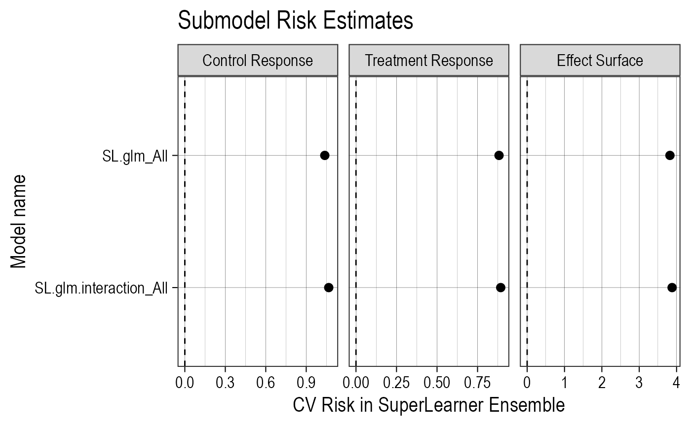
Plot VIMP
ggplot(filter(results, estimand == "VIMP")) +
geom_abline(intercept = 0, slope = 0, linetype = "dashed") +
geom_pointrange(
aes(x = term, y = estimate, ymin = estimate - 1.96 * std_error, ymax = estimate + 1.96 * std_error)) +
expand_limits(y = 0) +
scale_x_discrete("Covariate") +
scale_y_continuous("Reduction in R² from full model") +
coord_flip() +
ggtitle("Covariate Importance") +
theme_minimal() +
theme_alethea(base_family = "Arial Narrow") -> gp
plot_list <- c(plot_list, list(gp))
print(gp)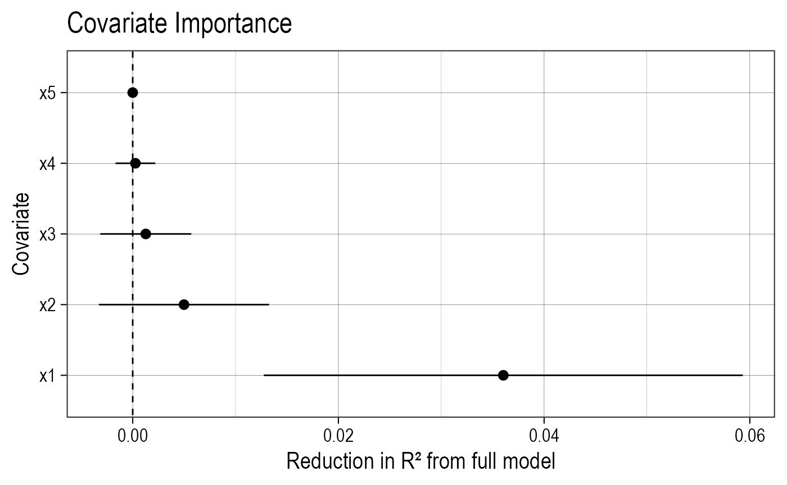
Plot Continuous Covariates’ MCATE
for (cov in continuous_moderators) {
ggplot(filter(results, estimand == "MCATE", term == cov)) +
geom_abline(intercept = 0, slope = 0, linetype = "dashed") +
geom_ribbon(
aes(x = value, ymin = estimate - 1.96 * std_error, ymax = estimate + 1.96 * std_error), alpha = 0.75
) +
geom_line(
aes(x = value, y = estimate)
) +
expand_limits(y = 0) +
scale_x_continuous("Covariate level") +
scale_y_continuous("CATE") +
ggtitle(paste("Marginal effects across", cov)) +
theme_minimal() +
theme_alethea(base_family = "Arial Narrow") -> gp
plot_list <- c(plot_list, list(gp))
print(gp)
} 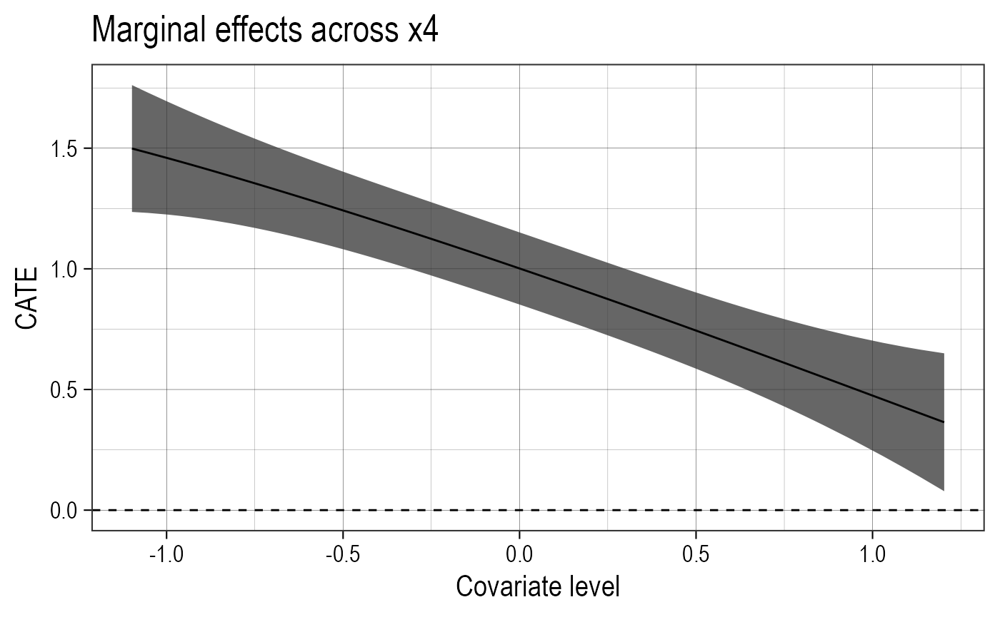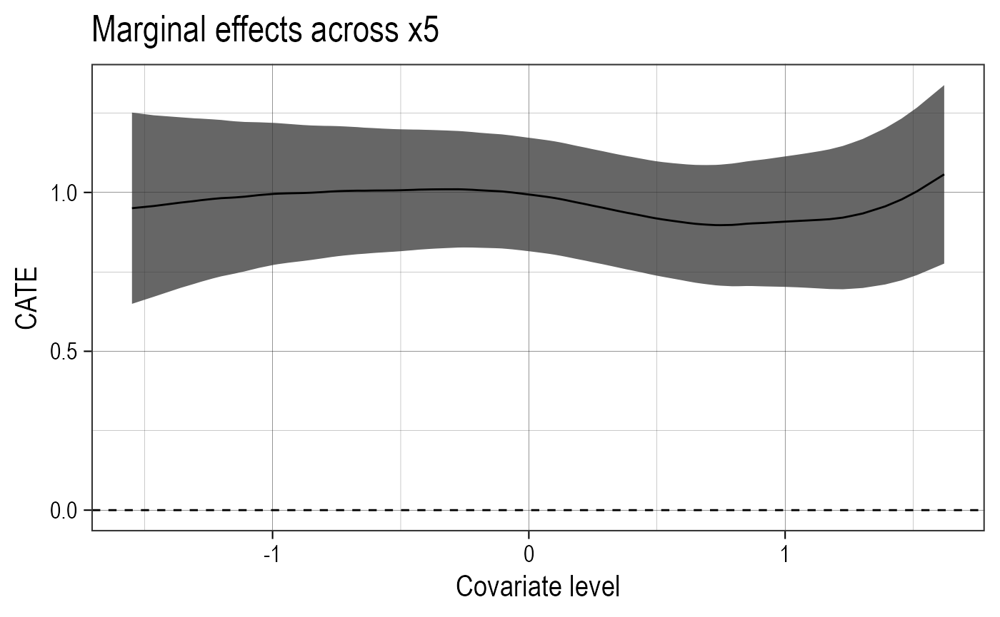
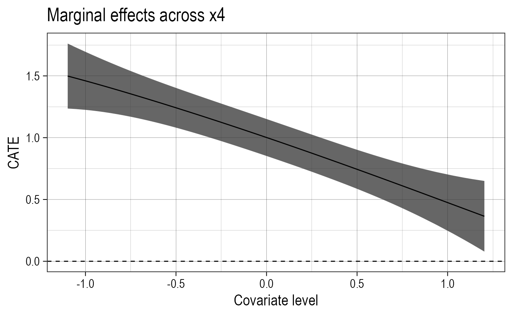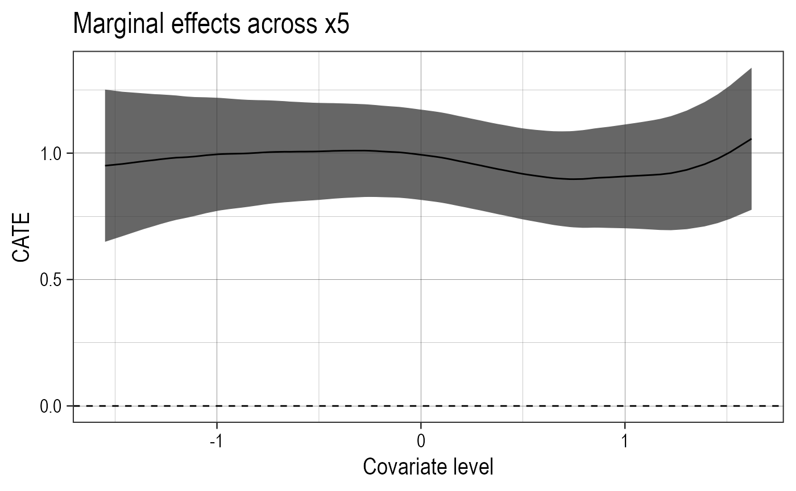
Plot Continuous Covariates’ PCATE
for (cov in continuous_moderators) {
ggplot(filter(results, estimand == "PCATE", term == cov)) +
geom_abline(intercept = 0, slope = 0, linetype = "dashed") +
geom_ribbon(
aes(x = value, ymin = estimate - 1.96 * std_error, ymax = estimate + 1.96 * std_error), alpha = 0.75
) +
geom_line(
aes(x = value, y = estimate)
) +
expand_limits(y = 0) +
scale_x_continuous("Covariate level") +
scale_y_continuous("CATE") +
ggtitle(paste("Marginal effects across", cov)) +
theme_minimal() +
theme_alethea(base_family = "Arial Narrow") -> gp
plot_list <- c(plot_list, list(gp))
print(gp)
}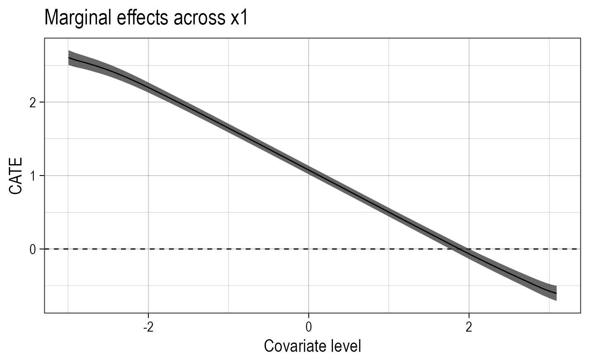 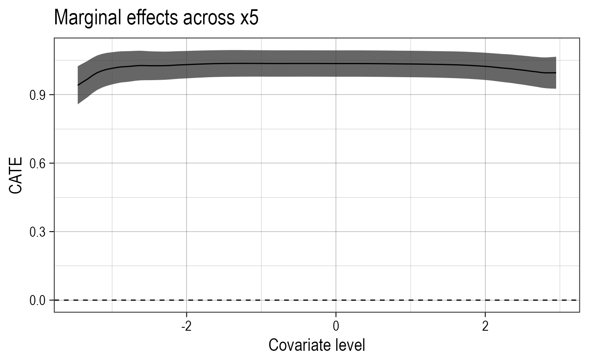
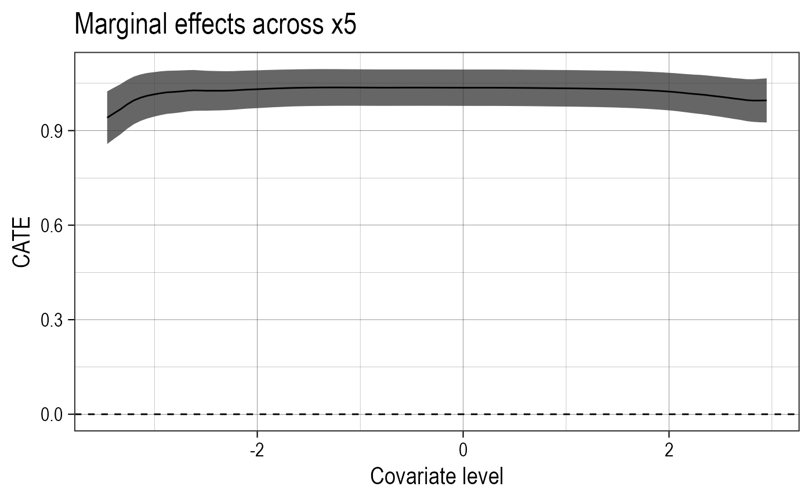
Plot Discrete Covariates’ MCATE
for (cov in discrete_moderators) {
ggplot(filter(results, estimand == "MCATE", term == cov)) +
geom_abline(intercept = 0, slope = 0, linetype = "dashed") +
geom_pointrange(
aes(x = level, y = estimate, ymin = estimate - 1.96 * std_error, ymax = estimate + 1.96 * std_error)) +
expand_limits(y = 0) +
scale_x_discrete("Covariate level") +
scale_y_continuous("CATE") +
ggtitle(paste("Marginal effects across", cov)) +
theme_minimal() +
theme_alethea(base_family = "Arial Narrow") -> gp
plot_list <- c(plot_list, list(gp))
print(gp)
}
Plot Discrete Covariates’ PCATE
for (cov in discrete_moderators) {
ggplot(filter(results, estimand == "PCATE", term == cov)) +
geom_abline(intercept = 0, slope = 0, linetype = "dashed") +
geom_pointrange(
aes(x = level, y = estimate, ymin = estimate - 1.96 * std_error, ymax = estimate + 1.96 * std_error)) +
expand_limits(y = 0) +
scale_x_discrete("Covariate level") +
scale_y_continuous("CATE") +
ggtitle(paste("Marginal effects across", cov)) +
theme_minimal() +
theme_alethea(base_family = "Arial Narrow") -> gp
plot_list <- c(plot_list, list(gp))
print(gp)
}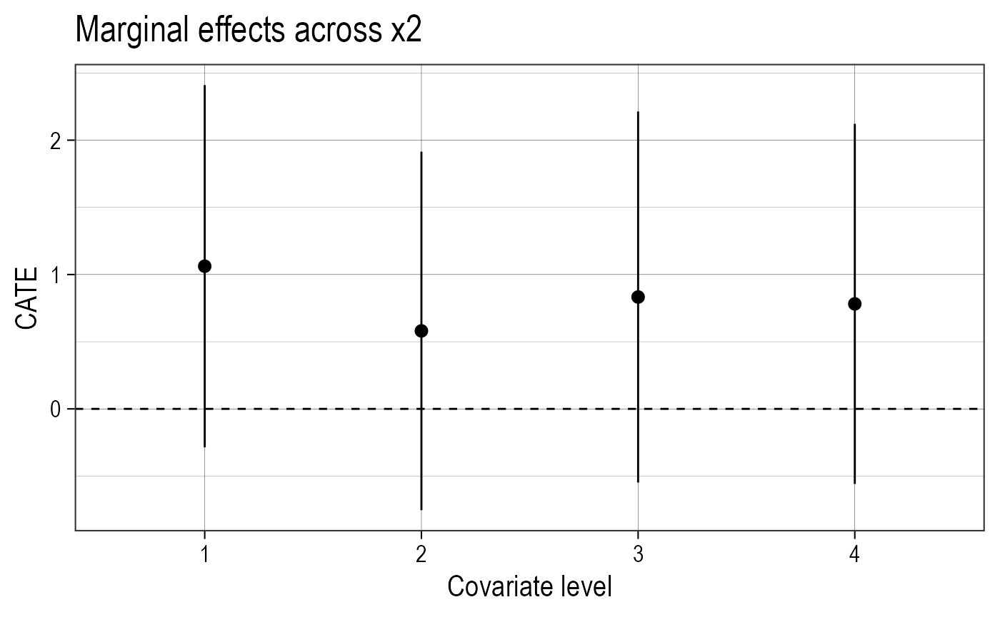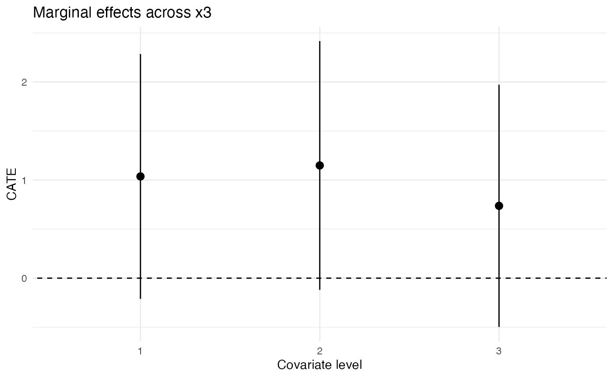